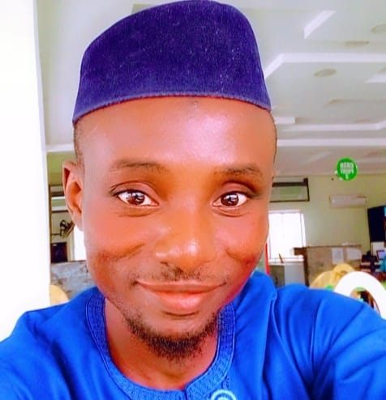

MY PROFILE

Name:
Abdulmalik Sanni A
My Introduction
I am a software Engineer aiming to create future innovations to contribute to the development of Africa. I am a gentle and easy going individual.
My Goals
after completing this programm I would be able to contribute positively to solve human related problem in software Engineering.
EDUCATIONAL BACKGROUND 📖
Front End Engineering
-
Altschool Africal School of Engineering - Nigeria
2022 - 2023
Web Design | Teacher
-
Blogger - Nigeria
2016 - 2023
BSC Chemistry
-
University of Abuja - Nigeria
2010 -2015
Green Living
-
Abuja - Nigeria
2023 - 2023
WORK EXPERIENCE ⚒
Teacher
-
Earlybird School - Nigeria
2008 - 2010
Technical writer
-
Boostmeup - Nigeria
2020 - 2023
Front end teacher
-
Muftitechscodes Academy-Abuja-Nigeria
2023 - 2023
Technical writer
-
Greenliving - Nigeria
2023 - Till Date
HOBBIES 💢
- Reading - (motivational & business books)
-
Travelling
- Reading Qur'an
- Football
OTHER SKILLS 〽️
-
soft skills
solutionist, thinker, innovator, teaching, instructor. -
hard skills
Design, Technical, computer, Presentation, Project Management, and Micro soft skills.